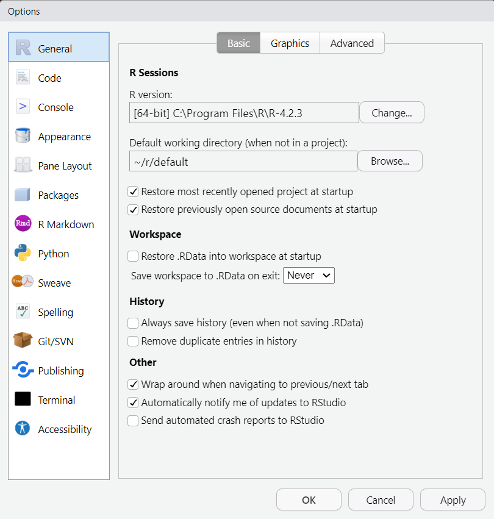

.
└── mitt_prosjekt
├── R
│ ├── main.R
│ └── functions.R
├── output
│ ├── *.xlsx
│ └── *.csv
├── data
│ ├── *.xlsx
│ └── *.csv
├── README.md
└── .gitignore11 Arbeidsprosess
Her er noen generelle kommentarer om hvordan prosjektene mine har vært organisert. Det vil gjøre det lettere for andre å ta over. Her er en grov oversikt over arbeidsprosessen min, etterfulgt av nøyere detaljer
Hovedenheten i arbeidsprosessen er et prosjekt. Hva et prosjekt er er et spørsmål jeg syns blir vanskeligere og vanskeligere å svare på desto lengre jeg holder på med prosjekter. Kort fortalt har de et felles tema, og noen få, relaterte output. Da kan man gjenbruke koder på tvers av relaterte skript. Eksempler på prosjekter er arbeidet med barnehagekapasitet, arbeidet med flyttestatistikk, prognoseevalueringa. Dette er en abstrakte inndelinga av arbeidet mitt, og det sammenfaller med den fysiske inndelinga i mapper og Rstudio-prosjekter. Hvert prosjekt inneholder (vanligvis): et hovedskript og en del støtteskript. De ligger lagra på Mine dokumenter på C:, med oppdaterte sikkerhetskopier på M:\StatTK\R\sikkerhetskopier.
11.1 Rproj
Rstudio-prosjekter er en nyttig måte å organisere prosjekter i R. Hovednytten kommer i at alle filstier blir relative til prosjektets rotmappe. Rotmappa er der .Rproj-fila ligger. Hadde jeg måtte definere alle stier ut fra hvor de ligger på min PC ville det blitt vanskelgiere for dere å ta over. Pakka here er også nyttig for å gjøre stier enda mer robuste.
Når vi prater om .Rproj, her er en instilling dere burde endre på: Skru av Restore .RData into workspace on startup og velg never på Save workspace to .RData on exit. Dette er innstillinger som gjør det litt raskere for deg å komme inn i et prosjekt, men som vil gi deg en falsk trygghet, og som inviterer til noen av de feilene om jeg omtaler i Chapter 12.

Hvis du lurer på om en mappe er et Rstudio-prosjekt kan se se etter en .Rproj-fil. Legg f.eks. merke til at i mappa apps inneholder tre undermapper og ingen .Rproj. Dette fordi hver app er sitt eget Rstudio-prosjekt.
11.2 main-filer og mappestruktur
Generelt etterstreber jeg en mappestruktur som er omtrent slik ut:
Ingen prosjekter ser akkurat slik ut, men det er et mål. Elementene i mappa:
- I mappa
Rligger alle kodeskriptene. main.R: dette er et lite skript som laster inn funksjoner fra andre skript, og som kun inneholder de få kodene som trengs for å lage outputen. Vanligvis putter jeg all funksjonalitet inn i funksjoner som jeg putter i ett eller flere egne skript.functions.R: Om det kun er ett skript, heter dette vanligvisfunctions.R. Blir det mange funksjoner og uoversiktelig med alle i ett skript, deler jeg dem opp i flere skript med mer eller mindre beskrivende navn somcleaning-functions.R,import-functions.R, etc.- I mappa
outputligger alle de prosesserte filene. Ofte.csveller.xlsxfiler. - I mapppa
dataligger rådatafilene. I noen prosjekter lasta jeg ned data fra nettet og la her. Andre plasser lasta jeg ned data via API, og lagre en kopi av dem her for å ikke beslaglegge API-en unødvendig. I andre kopierte jeg filer fraM:-disken og la her. Hvis jeg arbeida med filer fraM:pleide jeg vanligvis å oppgi filstien til fila direkte i funksjonen som importerte dataene til R. - Ideelt sett skulle alle prosjekter har en
readMe.md(ellerlesMeg.mdpå norsk). Denne fila (som noen gang blei printa som en pdf) forklarer hva prosjektet handler om. .gitignore: denne fila brukes av Git (se ned), og du kan se bort fra den.
Shiny-appene har i tillegg en fil som heter app.R, som har samme hovedfunksjon som main.R. Her defineres sjølve appen. Alle skript som ligger i R blir automatisk kjørt når man kjører app.R, i motsetning til main.R hvor man manuelt må kjøre alle skript via source().
Mange av prosjekta er en eksentrisk blanding av engelsk og norsk, som kom av at jeg vanligvis koder på engelsk og dokumenterer på norsk. I enkelte prosjekter var jeg flinkere på være konsekvent enn i andre.
11.3 Git
Hvorfor: Se figur på side 4 av denne artikkelen.
Sikkerhetskopier til M: